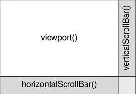

Scrolling AreasThe QScrollArea class provides a scrollable viewport and two scroll bars. If we want to add scroll bars to a widget, it is much simpler to use a QScrollArea than to instantiate our own QScrollBars and implement the scrolling functionality ourselves. Figure 6.11. QScrollArea's constituent widgets The way to use QScrollArea is to call setWidget() with the widget we want to add scroll bars to. QScrollArea automatically reparents the widget to make it a child of the viewport (accessible through QScrollArea::viewport()) if it isn't already. For example, if we want scroll bars around the IconEditor widget we developed in Chapter 5, we can write this:
int main(int argc, char *argv[])
{
QApplication app(argc, argv);
IconEditor *iconEditor = new IconEditor;
iconEditor->setIconImage(QImage(":/images/mouse.png"));
QScrollArea scrollArea;
scrollArea.setWidget(iconEditor);
scrollArea.viewport()->setBackgroundRole(QPalette::Dark);
scrollArea.viewport()->setAutoFillBackground(true);
scrollArea.setWindowTitle(QObject::tr("Icon Editor"));
scrollArea.show();
return app.exec();
}
The QScrollArea presents the widget at its current size or uses the size hint if the widget hasn't been resized yet. By calling setWidgetResizable(true), we can tell QScrollArea to automatically resize the widget to take advantage of any extra space beyond its size hint. By default, the scroll bars are only displayed when the viewport is smaller than the child widget. We can force the scroll bars to always be shown by setting scroll bar policies: scrollArea.setHorizontalScrollBarPolicy(Qt::ScrollBarAlwaysOn); scrollArea.setVerticalScrollBarPolicy(Qt::ScrollBarAlwaysOn); Figure 6.12. Resizing a QScrollArea
QScrollArea inherits much of its functionality from QAbstractScrollArea. Classes like QTextEdit and QAbstractItemView (the base class of Qt's item view classes) derive from QAbstractScrollArea, so we don't need to wrap them in a QScrollArea to get scroll bars. |